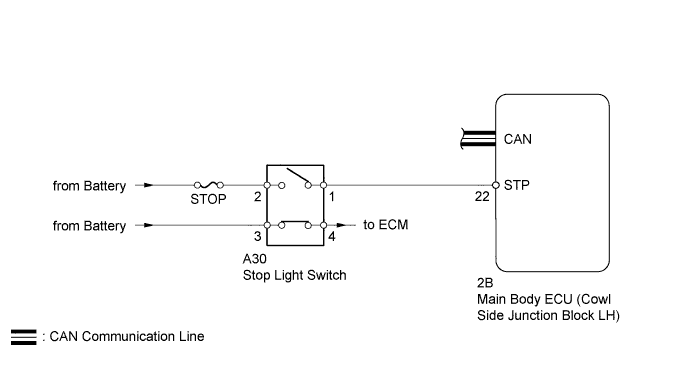
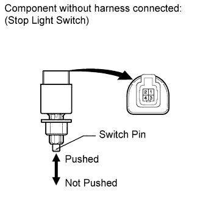
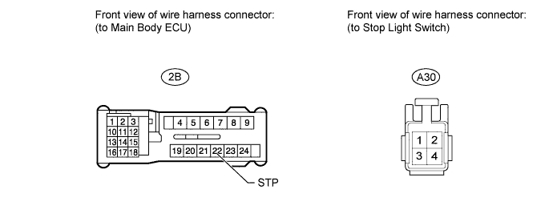

DTC B2284 Brake Signal Malfunction |
| DTC No. | Detection Condition | Trouble Area |
| B2284 | The circuit between the main body ECU and stop light switch, and the CAN communication signal between the main body ECU and ECM are inconsistent. |
|

| 1.READ VALUE USING INTELLIGENT TESTER (STOP LIGHT SWITCH) |
Use the Data List to check if the stop light switch is functioning properly.
| Tester Display | Measurement Item/Range | Normal Condition | Diagnostic Note |
| Stop Light SW | Stop light switch/ON or OFF | ON: Brake pedal depressed OFF: Brake pedal released | - |
| Result | Proceed to |
| Display on the intelligent tester does not change according to brake pedal operation | A |
| Display on the intelligent tester changes according to brake pedal operation | B |
|
| ||||
| A | |
| 2.INSPECT FUSE (STOP) |
Remove the STOP fuse from the engine room relay block.
Measure the resistance according to the value(s) in the table below.
| Tester Connection | Condition | Specified Condition |
| STOP fuse | Always | Below 1 Ω |
|
| ||||
| OK | |
| 3.INSPECT STOP LIGHT SWITCH |
 |
Disconnect the A30 stop light switch connector.
Measure the resistance according to the value(s) in the table below.
| Tester Connection | Switch Condition | Specified Condition |
| 1 - 2 | Stop light switch pin not pushed | Below 1 Ω |
| 3 - 4 | Stop light switch pin pushed | Below 1 Ω |
| 1 - 2 | Stop light switch pin pushed | 10 kΩ or higher |
| 3 - 4 | Stop light switch pin not pushed | 10 kΩ or higher |
|
| ||||
| OK | |
| 4.CHECK HARNESS AND CONNECTOR (MAIN BODY ECU - BATTERY AND STOP LIGHT SWITCH) |

Disconnect the 2B main body ECU connector.
Disconnect the A30 stop light switch connector.
Measure the voltage and resistance according to the value(s) in the table below.
| Tester Connection | Condition | Specified Condition |
| A30-2 - Body ground | Always | 11 to 14 V |
| Tester Connection | Condition | Specified Condition |
| 2B-22 (STP) - A30-1 | Always | Below 1 Ω |
| 2B-22 (STP) or A30-1 - Body ground | Always | 10 kΩ or higher |
|
| ||||
| OK | ||
| ||